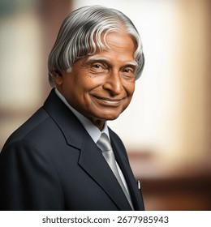

The Missile Man of India | 11th President of India

Dr. Avul Pakir Jainulabdeen Abdul Kalam was born on October 15, 1931, in Rameswaram, Tamil Nadu. He became one of India's greatest scientists.
He came from a humble family and worked hard to achieve great success through education and determination. He studied physics and aerospace engineering and later joined DRDO and ISRO, where he played a key role in India’s missile and space programs. Because of his contributions, he was known as the “Missile Man of India.” In 2002, he became the 11th President of India and was loved as the “People’s President.” He passed away on July 27, 2015, while inspiring students through a lecture.
In 2002, he became the 11th President of India and was known as the People's President.
I admire Dr. Kalam for his simplicity, intelligence, and dedication to inspiring students and youth.